Anthem
Enumeration
I had to adjust my nmap scan since the first scan was unfruitful.
nmap -Pn -sV -A -v 10.201.59.224
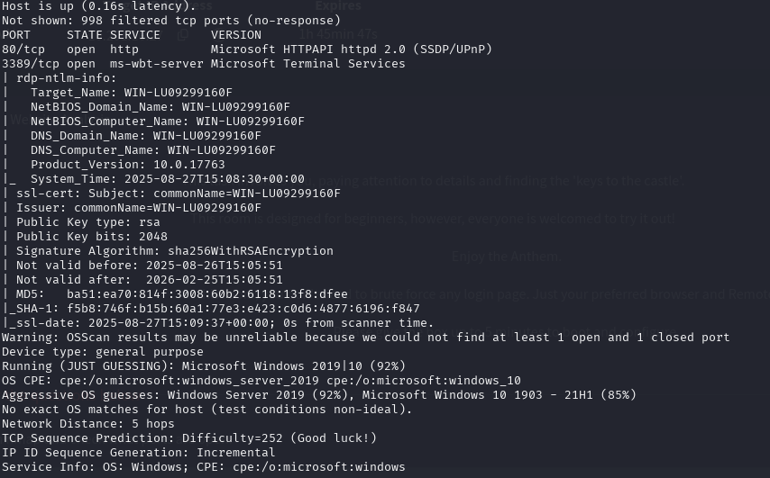
Windows. Port 80 is still http, but instead of 22 being up for ssh, the remote connection port is 3389. We will need to gather credentials for that, the remote connection being the final step.
Going to port 80 we see a normal website blog.
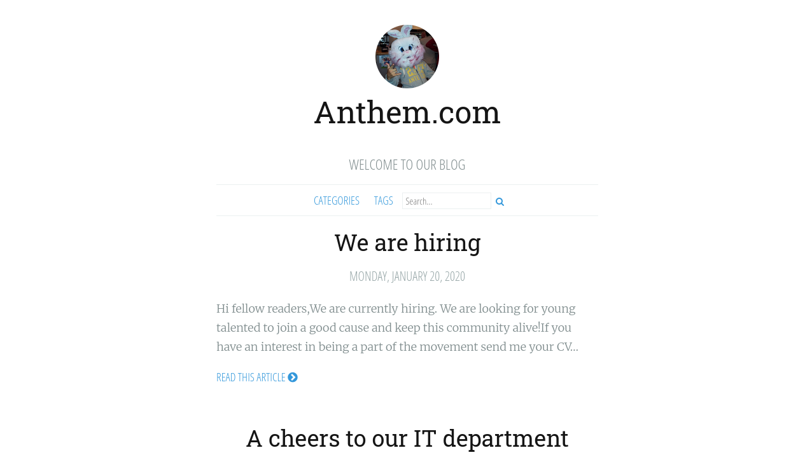
A quick check on /robots.txt reveals that there are a few domains that are blocked and the plaintext
UmbracoIsTheBest!
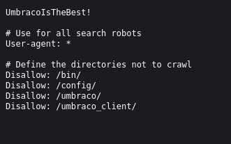
But, this gives us some information as to what the CMS is. Although, this information won't be particularly useful since the box specified that we will not be using any login information for the CMS.
The DirBuster report doesn't have significant results, so manual enumeration on the website itself is my next step.
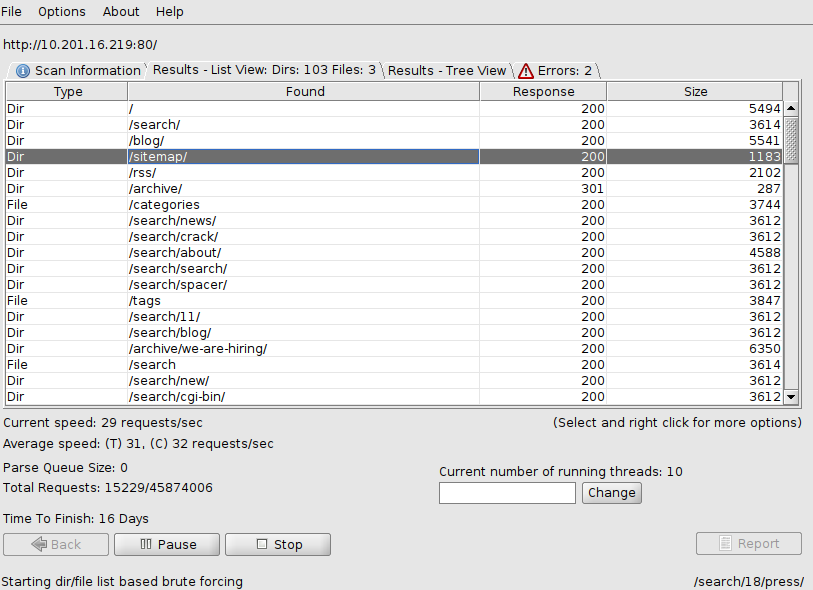
Flags
Scrolling down, I see the author, Jane Doe. Clicking her name sends me to her profile, where I find a flag.
Flag 1
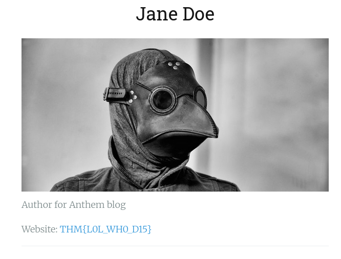
We find a few more flags in the webpage source code.
Flag 2
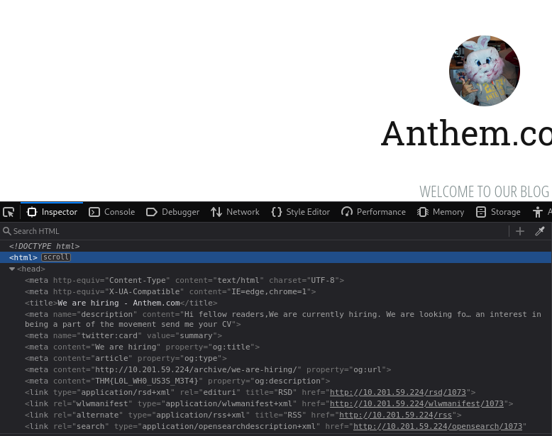
Flag 3
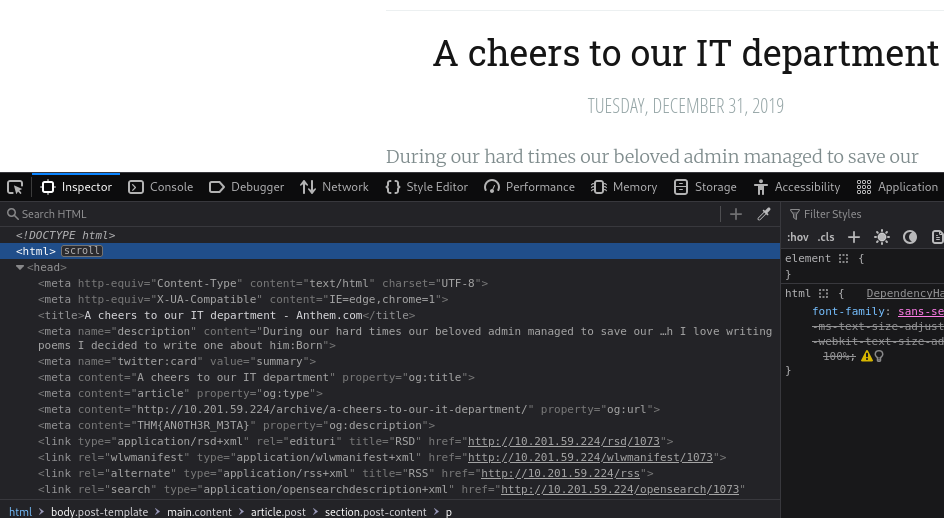
Flag 4
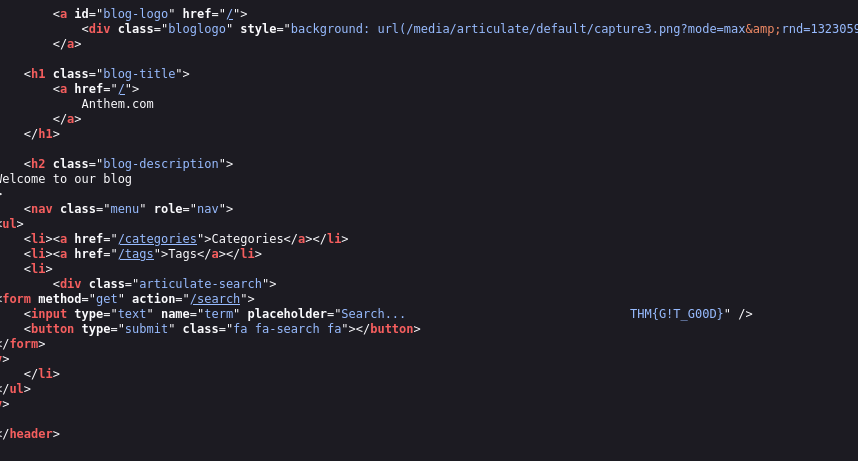
After checking out the Umbraco subdomain, I find a login but, again, it won't be very useful for me.
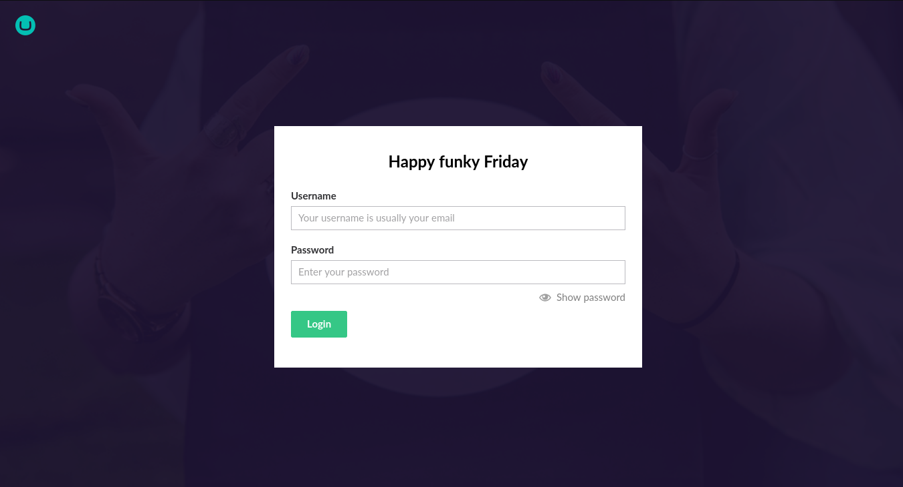
Reading the contents of the website for clues, I see something particularly interesting.
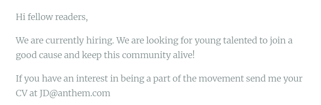
Here, we can see how this company formats their emails. This could potentially help us login to the remote software by using the initials of someone's name. Clearly this email belongs to Jane Doe, but it's been shortened to JD@anthem.com.
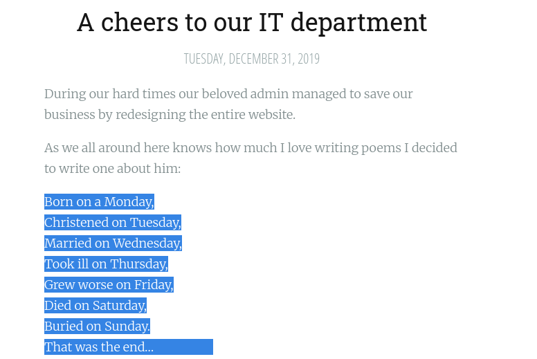
This seems very cryptic and esoteric. A quick Google search brings up this wiki page.
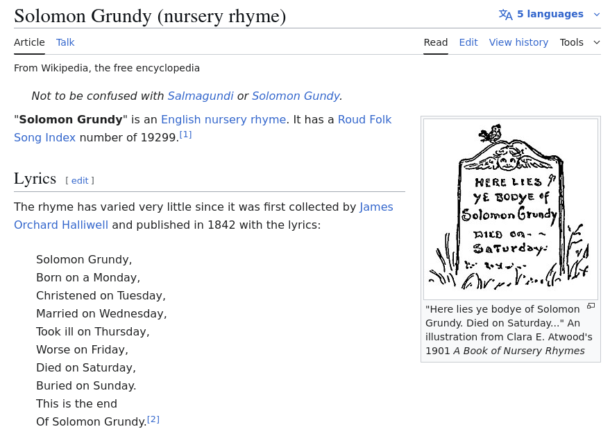
Solomon Grundy is a new name we haven't seen before. And since the post was about their "beloved admin," it is more than possible that it could work. Since we already have a password, we can try and do a remote connection request using these credentials.
Remote Login
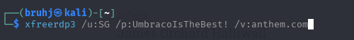
xfreerdp3 /u:SG /p:UmbracoIsTheBest! /v:anthem.com
For this to work, I have to put the IP into my /etc/hosts file.
After the Windows VM booted up, the login attempt was a success!
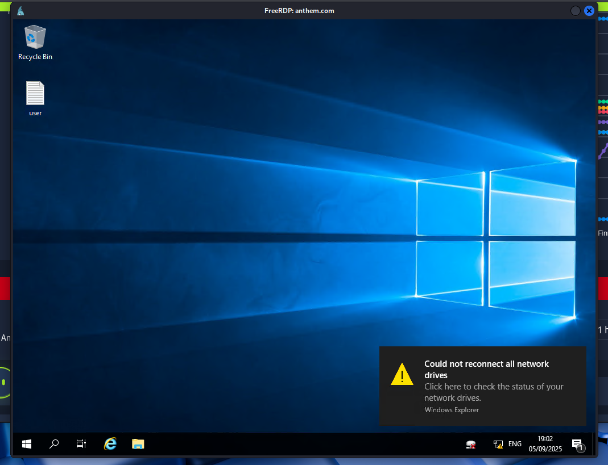
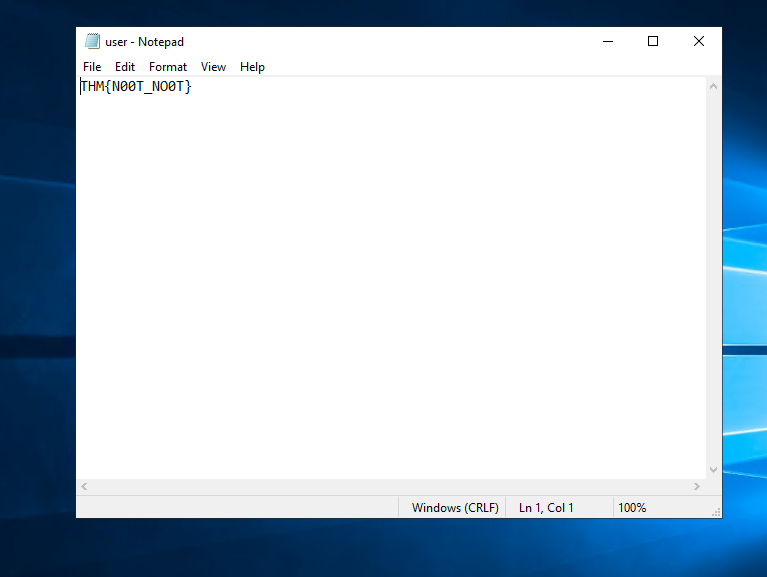
Privilege Escalation
The user flag done, now time to move on to the root flag. I immediately navigate to the file explorer and into 'This PC'.
Hidden Files
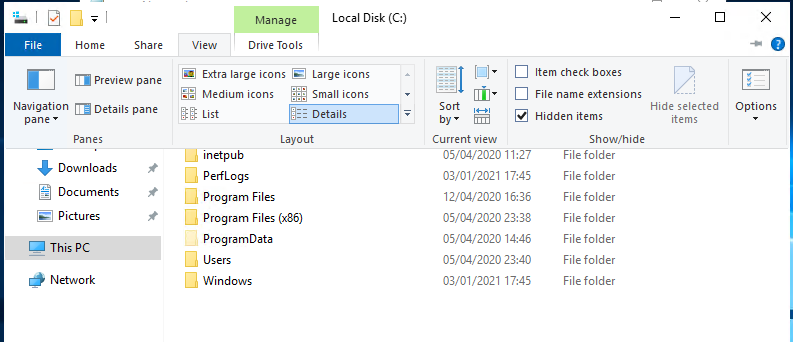
I check the box for hidden files and I enter the hidden file named 'backup.' Here, I see a file called 'restore.' The only problem is, I can't actually access the file without an administrator password. Unfortunately, trying out 'UmbracoIsTheBest!' doesn't work.
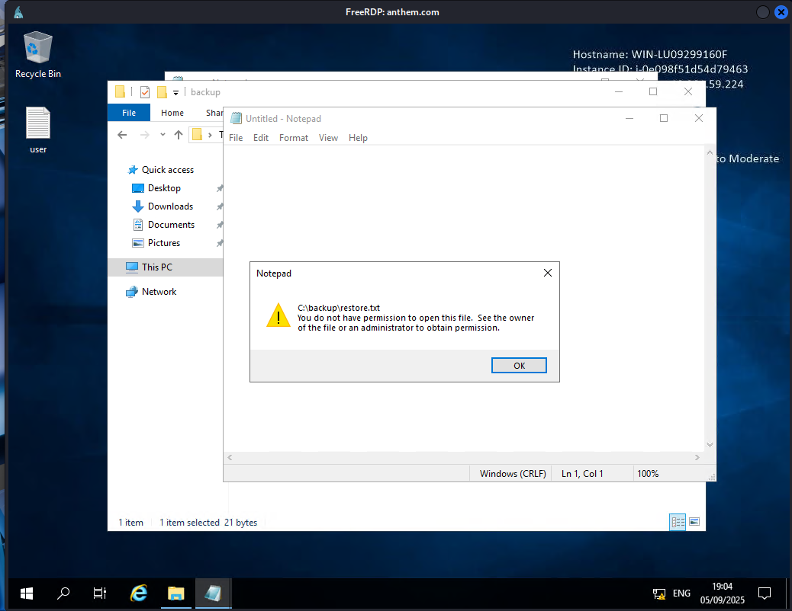
Permission Editing
Luckily, it looks like we can go into the permissions panel under the properties tab for this file and edit who has permissions to view it.
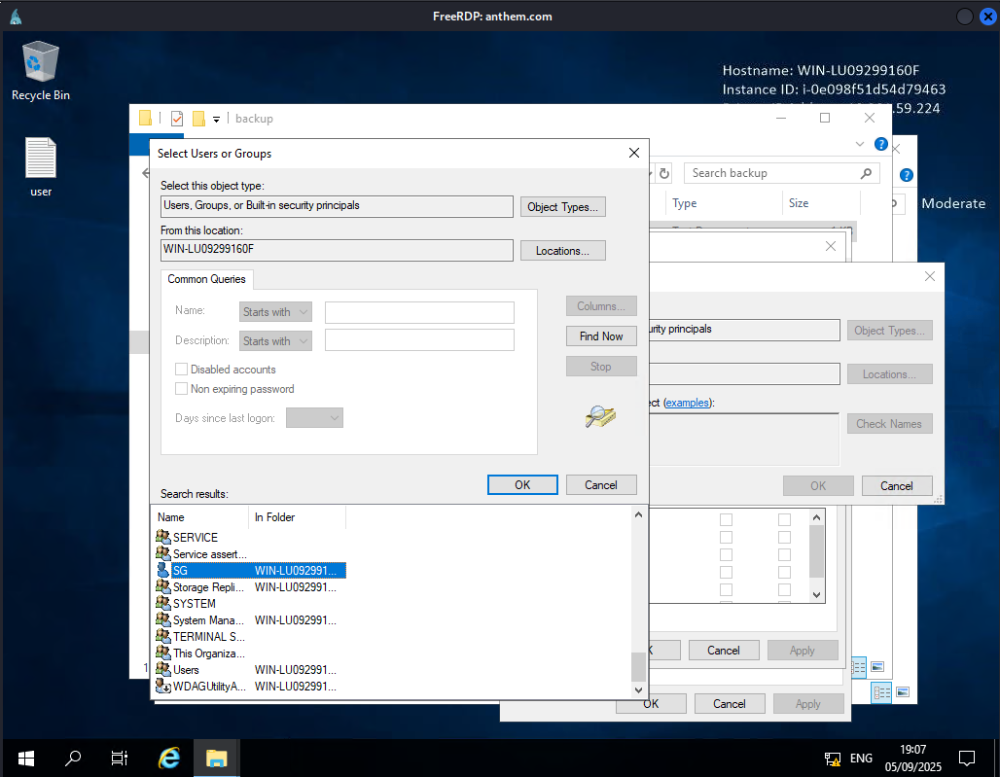
Going deeper, we can add SG (the user I am logged in on) to the group of people who can access the file. Saving these preferences and opening the file again gives us this notepad.
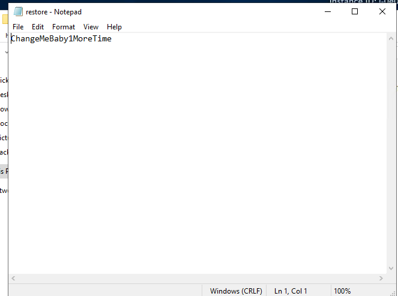
A password. Now, we can login as the admin.
Admin
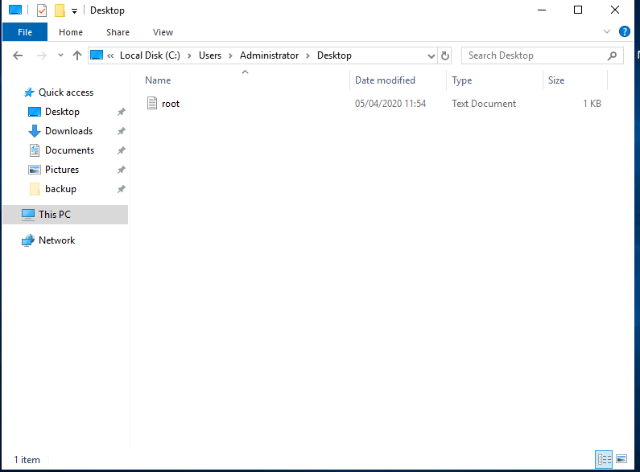
Final Flag
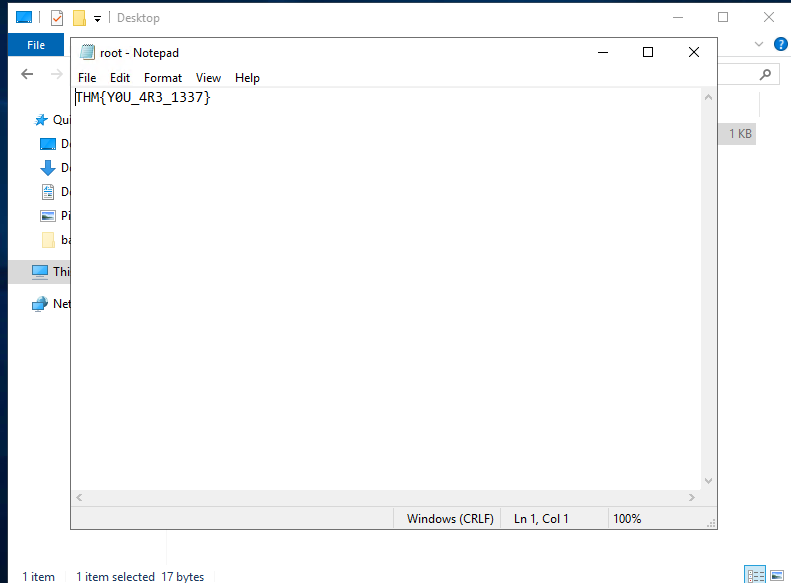